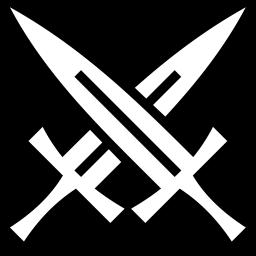
Art & attribution
Card symbols & credits.
The symbols on our historical cards come from professional open-source icon collections. Each original drawing is credited below, with links to its creator, source and licence.

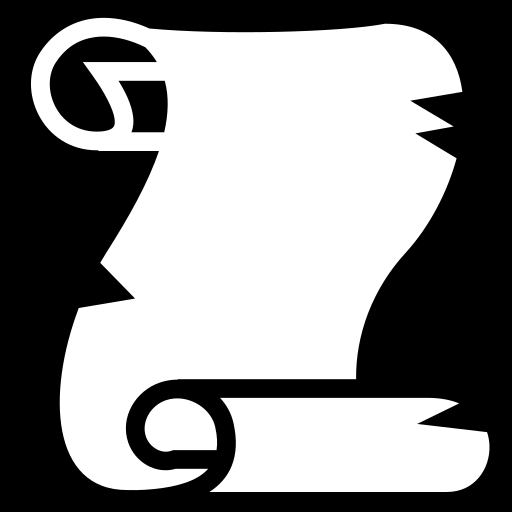


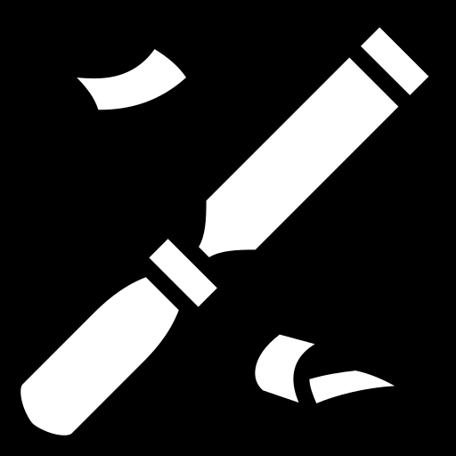

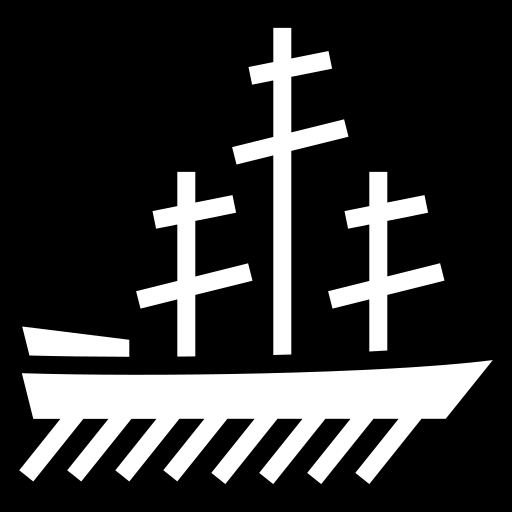

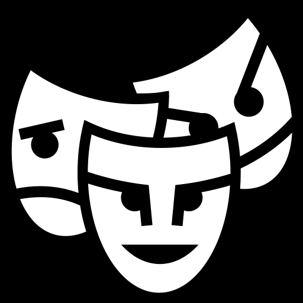

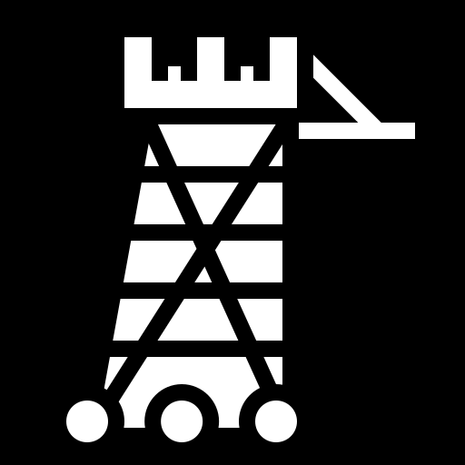

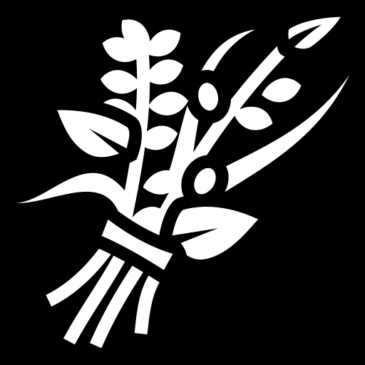


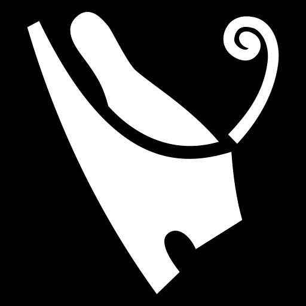

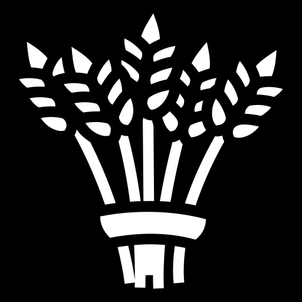

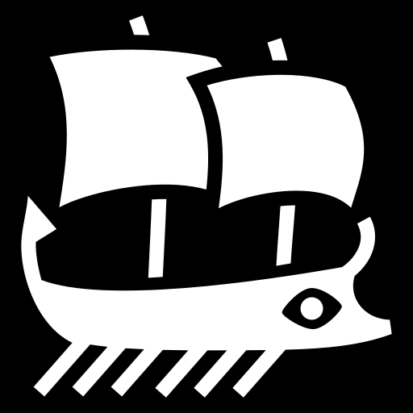

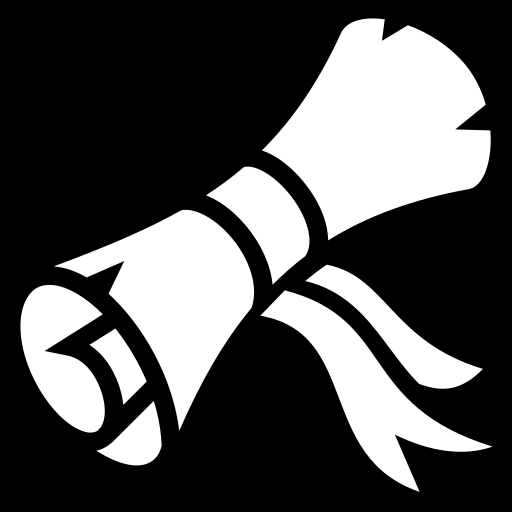